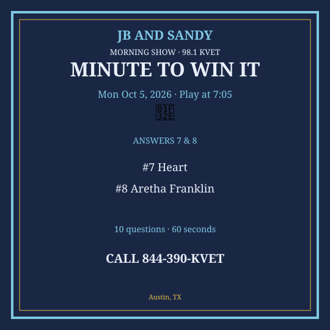
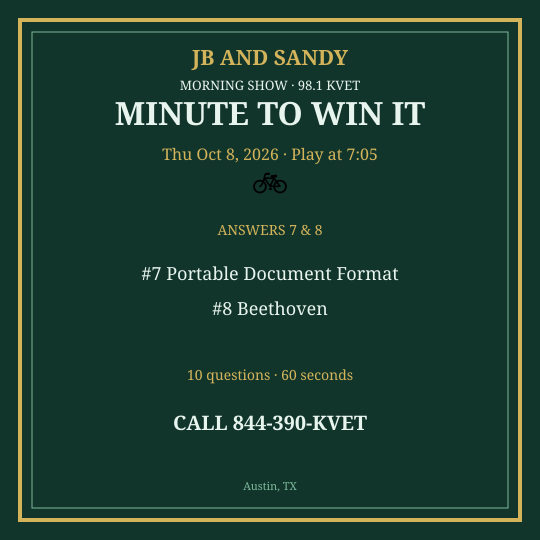

M2W Oct 5-9 2026
New packet. Questions get harder as you go. Graphics are Q7 & Q8 only.
Monday — Mon Oct 5, 2026
Question 1: What color is snow?
Answer: White
Question 2: How many cents in a dollar?
Answer: 100
Question 3: Which Texas city hosts South by Southwest?
Answer: Austin
Question 4: What do you call a group of lions?
Answer: Pride
Question 5: Which sport is played at Wimbledon?
Answer: Tennis
Question 6: What is the capital of Japan?
Answer: Tokyo
Question 7: What organ pumps blood?
Answer: Heart
Question 8: Who sang “Respect”?
Answer: Aretha Franklin
Question 9: What is the Roman numeral for 50?
Answer: L
Question 10: Which desert is the largest hot desert in the world?
Answer: Sahara
Social card for Q7 & Q8 — download and post:
{kind=link}

Tuesday — Tue Oct 6, 2026
Question 1: What do you write with on a chalkboard?
Answer: Chalk
Question 2: How many zeros in one thousand?
Answer: Three
Question 3: What is Austin’s minor-league baseball team?
Answer: Round Rock Express / Austin is AAA Express
Question 4: What is a baby dog called?
Answer: Puppy
Question 5: Which country invented pizza as we know it?
Answer: Italy
Question 6: What is the center of an atom called?
Answer: Nucleus
Question 7: What does FBI stand for?
Answer: Federal Bureau of Investigation
Question 8: Who wrote “Pride and Prejudice”?
Answer: Jane Austen
Question 9: How many players are on a baseball field for one team?
Answer: Nine
Question 10: What is the longest river in the world by most modern measurements?
Answer: Amazon or Nile (Amazon by discharge/length debates; accept Nile or Amazon)
Social card for Q7 & Q8 — download and post:
{kind=link}
Wednesday — Wed Oct 7, 2026
Question 1: What do you drink that comes from cows?
Answer: Milk
Question 2: How many days in September?
Answer: 30
Question 3: Which Austin park is named for a president and sits on Lady Bird Lake?
Answer: Zilker Park
Question 4: What color do you get mixing red and blue?
Answer: Purple
Question 5: Which planet is closest to the sun?
Answer: Mercury
Question 6: What is the main ingredient in hummus?
Answer: Chickpeas
Question 7: What does USB stand for?
Answer: Universal Serial Bus
Question 8: Who scored the “Hand of God” goal?
Answer: Diego Maradona
Question 9: What is the square of 13?
Answer: 169
Question 10: In what year did the Titanic sink?
Answer: 1912
Social card for Q7 & Q8 — download and post:
{kind=link}
Thursday — Thu Oct 8, 2026
Question 1: What do you use to cut paper?
Answer: Scissors
Question 2: How many sides on a stop sign?
Answer: Eight
Question 3: What is the name of Austin’s pro soccer club?
Answer: Austin FC
Question 4: What do caterpillars turn into?
Answer: Butterflies
Question 5: Which U.S. coin is worth 25 cents?
Answer: Quarter
Question 6: What is the largest bone in the human body?
Answer: Femur
Question 7: What does PDF stand for?
Answer: Portable Document Format
Question 8: Who composed “Moonlight Sonata”?
Answer: Beethoven
Question 9: What is the capital of Australia?
Answer: Canberra
Question 10: How many time zones does Texas span?
Answer: One (Central) — officially one
Social card for Q7 & Q8 — download and post:
{kind=link}

Friday — Fri Oct 9, 2026
Question 1: What melts in your mouth, not in your hand — classic candy slogan?
Answer: M&M’s
Question 2: How many innings if a baseball game is tied after 9?
Answer: Extra innings
Question 3: What river runs through downtown Austin?
Answer: Colorado River / Lady Bird Lake
Question 4: What is 11 × 11?
Answer: 121
Question 5: Which continent is Egypt on?
Answer: Africa
Question 6: What is the study of weather called?
Answer: Meteorology
Question 7: What does DNA stand for?
Answer: Deoxyribonucleic acid
Question 8: Who painted the Mona Lisa?
Answer: Leonardo da Vinci
Question 9: What year did man first walk on the moon?
Answer: 1969
Question 10: What is the currency of Japan?
Answer: Yen
Social card for Q7 & Q8 — download and post:
{kind=link}